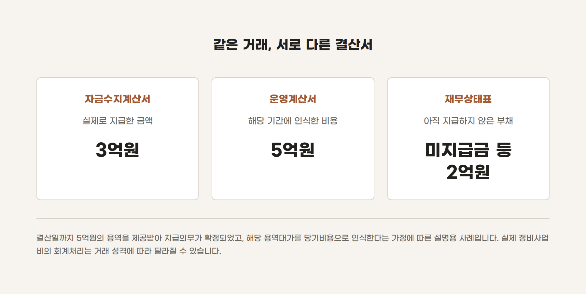
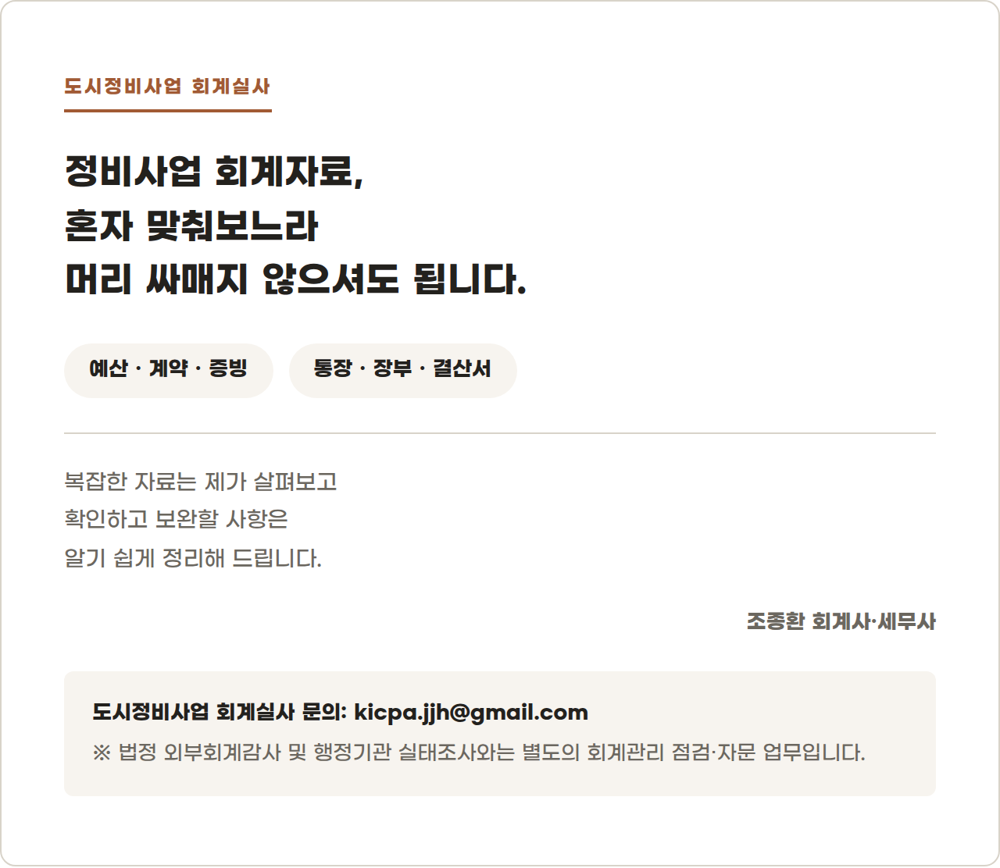

통장에서는 3억만 나갔는데, 결산서에는 왜 5억일까?
조합의 세무대리 업무를 하다 보면 결산보고를 위해 총회에 참석해 달라는 요청을 받을 때가 있습니다.
총회에서 정비사업조합의 결산서를 설명하다 보면, 조합원들이 의문을 갖는 지점 중 하나가 통장과 결산서의 숫자가 다를 때입니다.
실제로 이런 질문을 받곤 합니다.
통장에서는 3억만 지급됐는데, 결산서에는 왜 5억으로 적혀 있나요? 조합장 횡령 아닌가요?
숫자만 놓고 보면 장부가 잘못 작성된 것처럼 보일 수 있습니다.
하지만 통장과 결산서의 금액이 다르다는 사실만으로 회계처리가 잘못됐다고 단정할 수는 없습니다. 통장은 실제로 돈이 들어오고 나간 시점을 보여줍니다.
반면 발생주의로 작성되는 재무제표는 실제 돈이 지급됐는지와 별개로, 회계상 인식요건이 충족된 시점에 자산·비용·부채 등을 반영합니다.
쉽게 말하면 돈을 아직 전부 지급하지 않았더라도, 이미 용역을 제공받아 지급해야 할 금액이 확정됐다면 장부에 먼저 반영될 수 있다는 뜻입니다.
1. 같은 거래를 서로 다른 기준으로 기록합니다
정비사업조합의 결산서에는 대표적으로 다음 세 가지 서류가 사용됩니다.
| 구분 | 확인하려는 내용 | 작성 기준 |
|---|---|---|
| 자금수지계산서 | 실제로 돈이 얼마나 들어오고 나갔는가 | 현금주의 |
| 재무상태표 | 결산일 현재 자산·부채·순자산이 얼마인가 | 발생주의 |
| 운영계산서 | 해당 기간에 인식한 수익과 비용이 얼마인가 | 발생주의 |
서울특별시 정비사업 조합 등 표준 예산·회계규정 제13조는 자금수지계산서는 현금주의로 하고, 자금수지계산서 이외의 재무제표는 발생주의 회계원칙을 적용하여 작성하도록 정하고 있습니다.
여기서는 이해를 돕기 위해 각 재무제표의 가장 기본적인 역할만 단순화하여 설명하겠습니다.
또한 표준 예산·회계규정은 도시정비법 자체와 동일한 법률은 아닙니다. 실제 적용 시에는 해당 조합이 채택한 회계규정과 정관도 함께 확인해야 합니다.
2. 자금수지계산서는 실제 현금의 흐름을 보여줍니다
자금수지계산서는 일정 기간 조합의 통장으로 실제 들어온 돈과 실제 지급한 돈을 중심으로 작성합니다.
예를 들어 어떤 용역의 전체 대가가 5억원이더라도 해당 연도에 실제 지급한 금액이 3억원이라면, 그해 자금수지계산서에는 원칙적으로 실제 지급한 3억원이 표시됩니다.
나머지 2억원을 다음 해에 지급했다면 그 금액은 다음 해 자금수지계산서에 반영됩니다.
자금수지계산서에서는 다음 사항을 확인할 수 있습니다.
- 조합원 분담금과 차입금이 실제로 얼마 들어왔는가
- 사업비와 운영비가 실제로 얼마 지급됐는가
- 현금과 예금 잔액이 얼마나 남아 있는가
- 장부상 잔액과 실제 통장 잔액이 일치하는가
따라서 자금수지계산서의 지출액은 통장 거래내역과 직접 대조하기에 적합합니다.
3. 발생주의 재무제표는 지급 여부만 보지 않습니다
재무상태표와 운영계산서 등은 실제 지급액만을 기준으로 작성하지 않습니다.
용역을 어느 정도 제공받았는지, 지급의무가 확정됐는지, 해당 거래를 자산과 비용 중 무엇으로 처리해야 하는지 등을 함께 판단합니다.
여기서 중요한 점은 지급의무가 발생한 금액이 모두 곧바로 당기비용이 되는 것은 아니라는 것입니다.
예를 들어 정비사업과 직접 관련된 설계비나 공사비 등은 거래 성격과 적용되는 회계처리 기준에 따라 자산 또는 사업원가 관련 항목으로 처리될 수 있습니다.
따라서 다음 세 가지는 구분해야 합니다.
- 계약서에 적힌 전체 계약금액
- 결산일까지 용역을 제공받아 지급의무가 확정된 금액
- 그중 해당 기간의 비용으로 인식해야 할 금액
이 세 금액이 언제나 같지는 않습니다.
4. 가상의 사례로 살펴보겠습니다
설명을 위한 가상의 사례로 다음과 같이 가정해 보겠습니다.
- 결산일까지 제공받은 용역대가: 5억원
- 검수 등을 거쳐 지급의무가 확정된 금액: 5억원
- 해당 용역대가를 당기의 비용으로 인식하는 거래
- 해당 연도 실제 지급액: 3억원
- 다음 연도 지급예정액: 2억원
이러한 전제라면 해당 연도 결산서에는 다음과 같이 나타날 수 있습니다.

다음 연도에 남은 2억원을 지급하면 자금수지계산서에는 2억원의 지출이 표시되고, 재무상태표의 미지급금 등 부채는 그만큼 줄어들게 됩니다.
이미 전년도에 비용으로 인식했다면 다음 연도에 2억원을 지급했다는 이유만으로 같은 비용을 다시 인식해서는 안 됩니다. 다만 이 사례는 현금주의와 발생주의의 차이를 설명하기 위해 해당 용역대가를 당기비용으로 인식한다고 가정한 것입니다.
실제 정비사업비는 거래의 성격과 적용되는 회계처리 기준에 따라 자산이나 사업원가 관련 항목으로 처리될 수 있습니다. 계약금액이나 지급의무가 확정됐다는 사실만으로 전액을 당기비용으로 처리하는 것은 아닙니다.
숫자가 다를 때 확인할 다섯 가지
통장의 입출금과 결산서의 금액이 다르다면 곧바로 오류라고 판단하기보다 다음 사항을 순서대로 확인하는 것이 좋습니다.
| 질의 사항 | 수행 방법 |
|---|---|
| ① 어떤 결산서를 비교하고 있는가? | 자금수지계산서인지, 재무상태표나 운영계산서인지 먼저 확인합니다. |
| ② 실제 지급액은 얼마인가? | 통장 거래내역과 자금수지계산서의 지출액을 대조합니다. |
| ③ 결산일까지 얼마만큼의 용역을 제공받았는가? | 계약금액 전체가 아니라 실제 과업수행 정도와 검수내역을 확인합니다. |
| ④ 지급하지 않은 금액이 부채로 반영되어 있는가? | 계약서, 검수자료, 세금계산서와 재무상태표의 미지급금 등 관련 계정을 대조합니다. |
| ⑤ 발생한 금액을 비용과 자산 중 어디에 반영했는가? | 거래의 성격과 조합의 회계처리 기준에 맞게 분류했는지 확인합니다. |
결산서를 이해할 때에는 '현금의 지급'과 '회계상 인식'을 구분해야 합니다.
현금 지급은 실제 돈이 나간 것을 의미합니다. 반면 회계상 인식은 현금 지급 여부와 별개로 해당 거래를 언제, 어떤 항목에 장부로 반영할지를 판단하는 과정입니다.
따라서 통장 잔액과 결산서 숫자가 다르다는 사실만으로 오류나 부정을 단정해서는 안 됩니다.
다만 그 차이가 왜 발생했는지는 계약서, 과업수행자료, 검수자료, 세금계산서, 통장과 회계장부를 통해 설명할 수 있어야 합니다.
좋은 결산서는 숫자가 단순히 맞는 결산서가 아니라, 숫자가 다른 이유까지 기록으로 설명할 수 있는 결산서입니다.
정비사업 회계자료를 직접 확인하고 정리하는 데 도움이 필요하시다면 아래 서비스를 참고해 주세요.

이 글은 2026년 9월 6일 현재 제공된 서울특별시 정비사업 조합 등 표준 예산·회계규정과 일반적인 회계원칙을 바탕으로 작성한 일반적인 정보입니다. 실제 자산·비용·부채의 인식과 분류는 개별 계약의 내용, 용역 수행 정도, 검수 여부 및 해당 조합의 회계규정에 따라 달라질 수 있습니다.
조종환 공인회계사·세무사